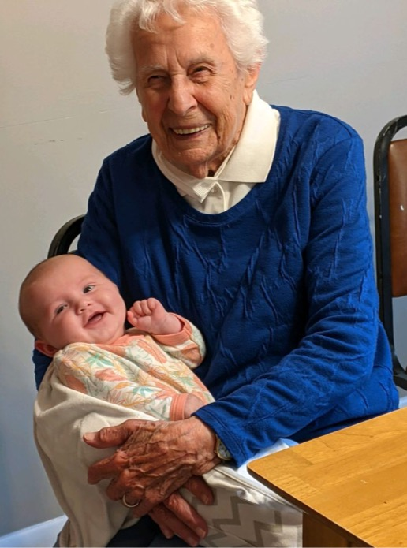
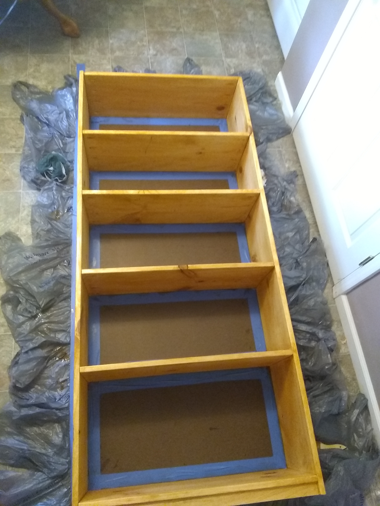
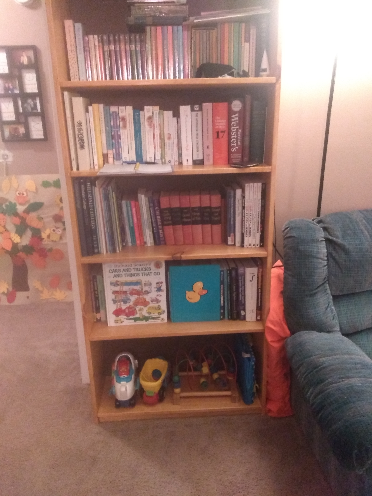
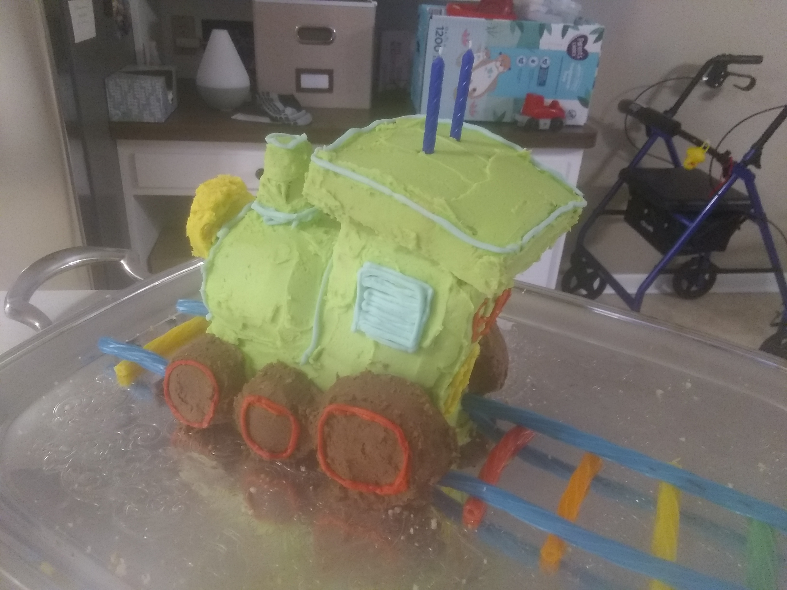
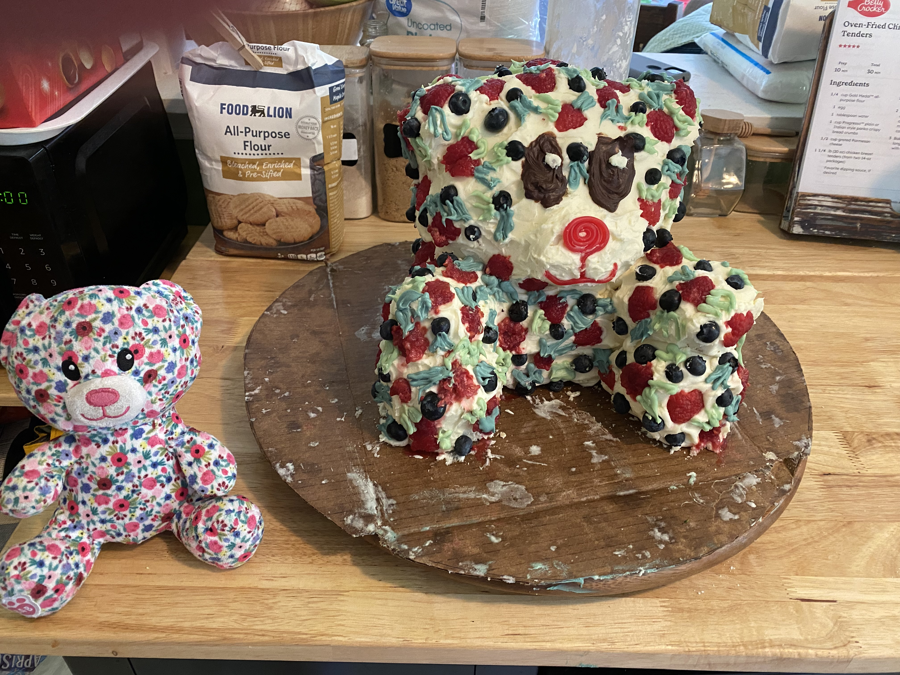
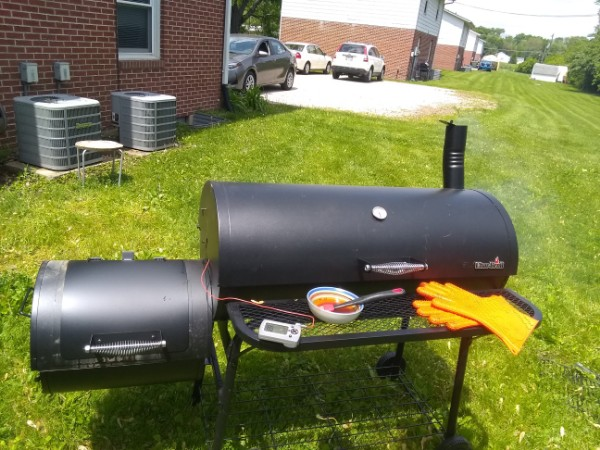
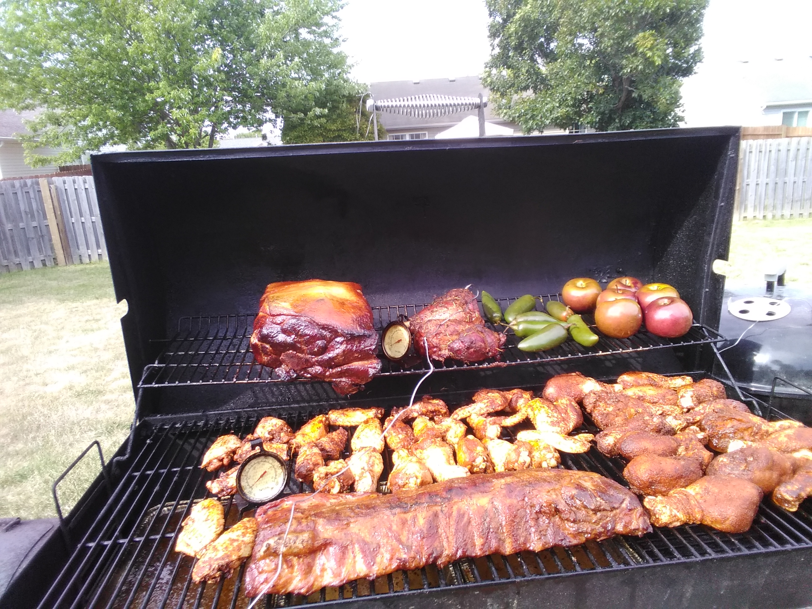

I have been a postdoc at UVA in Charlottesville, Virginia since the fall of 2022. I have liked math, and in particular probability, for as long as I can remember. The most important thing about me is that I am a Christian; I believe a Jewish man named Jesus who lived and died 2000 years ago is alive today and is king of the universe. I worship him with the people of Jefferson Park Baptist Church. I met my wonderful wife, Rebekah, on the first day of college in 2012. We got married in January 2016. We have a lively little boy named Ezra, born in 2019, and a beautiful girl named Rose, born in 2021. When not doing math I enjoy spending time with my family, grilling and smoking, memorizing poetry, writing silly songs about math to the tunes of familiar songs, reading C.S. Lewis, and cheering for the Colts. Ezra loves toys, books about his favorite fictional characters (especially Thomas the Tank Engine and the Avengers), and his little sister. Rose loves being held, wearing pretty clothes, putting shoes on, taking shoes off, reading books, meeting people, and most of all playing with Ezra. Rebekah is a copyeditor; if you enjoy the intricacies of the English language, you should subscribe to her newsletter, Strike-Through. She's also a Steelers fan, but we root for each other's teams when they're not playing each other. If she knows of a book's existence, she's probably read it. I am originally from Chesterfield, Indiana. My first job was stocking shelves and bagging groceries at a small grocery store in Chesterfield. I studied mathematics, and also philosophy, at Hillsdale College, where I completed a senior thesis on path sets in one-sided symbolic dynamics under the guidance of Will Abram. I studied at Purdue University from 2016 to 2022, when I received my PhD, writing a thesis about random walks in Dirichlet environments under the guidance of Jonathon Peterson. As long as I'm mentioning my background and my education, I want to thank my parents, especially my mom, who homeschooled me and my three siblings from kindergarten through high school and did a fantastic job. I would like to thank Don Housholder, who taught me calculus in his home over coffee and chocolate and encouraged me in my pursuit of mathematics. I want to thank all the professors at Hillsdale, especially Will Abram, David Murphy, David Gaebler, Nathan Schlueter, Lee Cole, Matt Gaetano, and Richard Gamble. I am a member of the Association of Christians in the Mathematical Sciences and the Association for Mathematical Research.
Photos
Darius (Shaquille) Leonard became one of Ezra's favorite football players by giving him a signed ball.

Rose seemed very happy to meet her namesake, my grandmother.

Sometimes I like to try my hand at making things. Here's a bookcase under construction.

And here it is in use.

With the help of the Internet and some family members, I made this cake for Ezra when he turned 2.

I made this cake for Rose when she turned 2: a replica of her favorite stuffed bear.

Here's my smoker in action. I usually use charcoal and hickory wood chunks, but I might use apple, pecan, or cherry depending on what I'm smoking.

Here's an inside view. This was a day when I hadn't smoked much all summer, so I smoked a little bit of everything all at once.